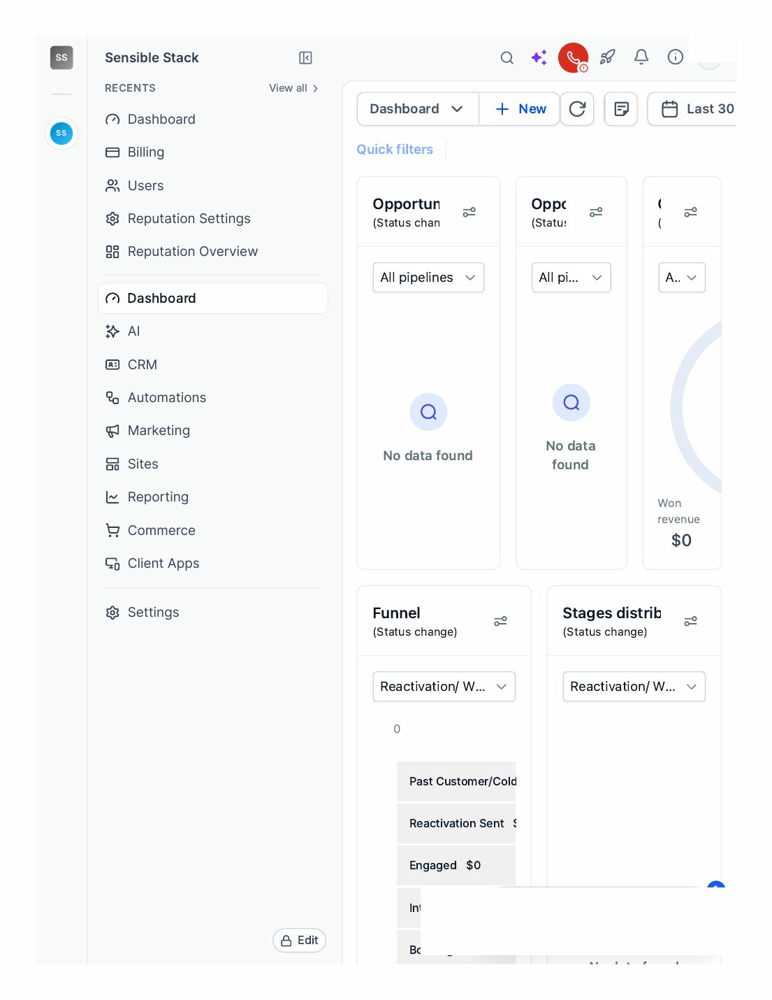
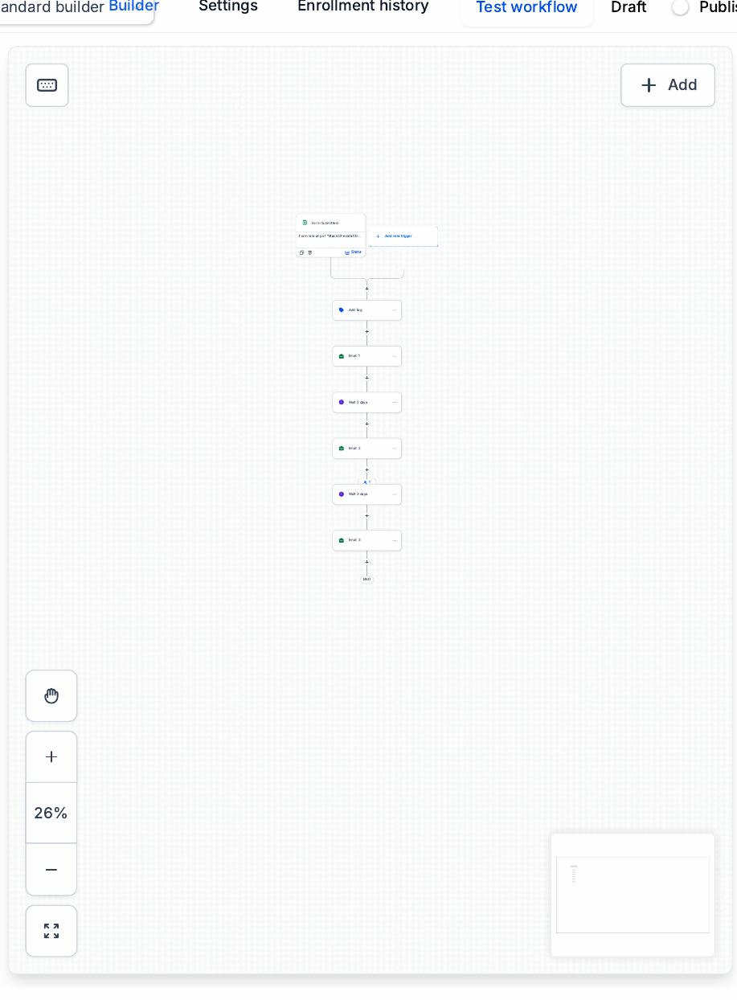

HighLevel Review: Every Tool Under One Roof, Assembly Required
Try it: Visit HighLevel (affiliate link: we may be paid if you sign up, at no extra cost to you).
6.8 Sensible Score, out of 10
Ratings by business type
Best suited to: businesses and agencies ready to run their follow up from one system, and willing to set it up properly. Weakest for solo operators who wanted a tool rather than a project.
Scored on our ten metric Sensible Score. See How We Rate for the method and what each number means.
Sensible Stack: Streamlining business, whatever your size
The short answer
HighLevel is not a demo account to us. This site's own checklist funnel runs on it: the landing page and thank you page at join.sensiblestack.io, the signup form, and the published workflow that tags each signup and sends the delivery emails. That live use earned it a trial. Then we stopped being polite and timed five real jobs inside the account: a sales pipeline, an email campaign, a booking with its confirmation workflow, the reputation tools, and a funnel built from one of HighLevel's own templates. The depth is real, and so is the assembly. HighLevel replaces more separate subscriptions than anything else we cover, and it charges you for that breadth in setup hours and small print rather than in the headline price.
What it is
HighLevel (sold as GoHighLevel) is an all in one platform for customer follow up: a CRM with contacts and pipelines, booking calendars, funnel and website builders, forms and surveys, email marketing, phone and texting, a workflow automation builder, a unified conversations inbox, and reputation tools for review requests. It is sold mainly to agencies, who buy the platform and resell sub accounts to their clients. A single business can buy in directly at the Starter tier and use one sub account as its own system, which is what we do. Everything below comes from that Starter account, not the agency tiers.

The five timed tests
The pipeline (about 5 minutes). Creating opportunities and dragging them through stages is quick, and a second opportunity for the same contact is blocked by default, a sensible guard. Then the traps. The dashboard's Total revenue figure counted a deal we had marked Lost: $600 shown, including the $300 loss. A deal dragged to the Sale stage still read 0% conversion and $0 won revenue, because Sale is a stage, not the Won status, and nothing tells you that. The dashboard's funnel widgets also open on an empty sample pipeline rather than yours, so the first numbers a new user sees are $0 and meaningless.
The email campaign (2 to 3 minutes). Building and sending from a template worked first time, and the reporting updated honestly. The template itself carried a June 2023 date, filler text, and a misspelled plan name in its pricing section. HighLevel's templates are scaffolding, not finished work, and this one would have embarrassed anyone who sent it unedited.
The booking and its workflow (about 4 minutes to build, fired correctly). A real booking through our calendar, confirmed for a Monday morning slot, triggered a confirmation workflow we had built for the test: enrolled within seconds, email sent, run finished cleanly. No confirmation email arrived from the calendar itself; the workflow's email was the only one. In HighLevel, the automations are not a garnish. They are how the product finishes jobs.

Reputation (about 3 minutes). Review requests by email switch on with no review platform connected, and they send. But the request email's Write a Review button then lands on your own website's homepage, because there is nowhere else for it to go: the recipient cannot actually leave a review. The setup checklist stalls at 2 of 6 until a Google Business Profile or another platform is connected. A headline feature that quietly does nothing until a separate account is wired in.
The template funnel (about 6 minutes to live). A funnel built from HighLevel's own Lead Automation Consultations template shipped with a form slot pointing at a form that does not exist in the account, so we created a form and repaired the redirect. What we deliberately left in place, as evidence: filler text in the body, four five star testimonials from a John Doe, broken logo placeholders, a 2021 copyright footer in a company name that is not ours, and texting consent wording still containing the template's bracketed placeholders. Six minutes to live, and an afternoon to make presentable.
Where it wins
- Nothing else at $97 a month replaces this much: CRM, bookings, funnels, email, forms and automations genuinely retire separate subscriptions, which is why Tools replaced scores a straight 10
- The workflow builder is the real product. Our checklist delivery chain, form, tag, three timed emails, was built once and has run unattended since; the test booking workflow fired within seconds of a real booking
- Contacts match by email across forms and bookings, so a returning customer does not duplicate. One contact record followed our test person through a booking and a funnel signup
- Email works out of the box on the shared sending domain, with an honest published ramp: 500 sends a day at the start, rising as the account warms
- The help centre is genuinely good. Every usage rate in our pricing guide came from HighLevel's own documentation, stated plainly, which is rarer than it should be
Where it frustrates
- The dashboard misleads before it informs: revenue that includes lost deals, widgets pointed at a sample pipeline, and a Sale stage that is not a won deal until you set the status by hand
- Templates ship unfinished: filler text, fake testimonials, stale dates, a misspelling, and in one case a form that does not exist. Budget editing time for anything customer facing
- Reputation is a dead end until a Google Business Profile is connected, and the product lets you send requests into that dead end without warning you
- The conversations inbox list failed to load for us across several minutes and reloads. Replies, notes and tags all worked from inside a contact record, but the front door of the inbox did not
- Contact matching cuts both ways: when the same email books and then submits a form under a different name, the newer name overwrites the older one on the single record
- What you build does not travel. Contacts export, but funnels, workflows and automations are HighLevel shaped; leaving means rebuilding them somewhere else
Pricing, and what sits on top of it
Prices checked on HighLevel's pricing page and help centre in November 2026. Starter is $97 per month, Unlimited $297, and the top tier $497, listed as Agency Pro on the pricing page. A single business buys Starter; the higher tiers are about running sub accounts for clients. The plan price is not the whole bill. Usage runs through a wallet that refills automatically: a local phone number is about $1.15 a month, texts about $0.00747 per segment plus carrier fees, email about $0.675 per thousand sent on the LC-Email system, registering to text legally (A2P) is a one time $22.50 at sole proprietor level, and premium workflow actions cost a cent each. Our worked first year for one small business on Starter, sending 2,000 emails and about 300 text segments a month, comes to roughly $1,090 billed annually or $1,285 billed monthly. The full workings, tier by tier, are in our HighLevel pricing guideHighLevel calendar guideHighLevel workflow guide.
Phone and texting: the honest gap
We have not tested HighLevel's phone side yet, and this review will not pretend otherwise. Our account has no number: calls, two way texting, missed call text back and the A2P registration that US carriers require before business texts are delivered are all downstream of buying a number and registering the business, which needs our tax documents in hand. Those tests are scheduled in our own account for December 2026, and this section will be replaced with the results, fees and timings included. What to expect, step by step, is in our HighLevel setup guide.
Who it suits, and who should skip it
Suit it if follow up is where your business leaks money: enquiries answered late, bookings in one tool, invoices in another, reviews never asked for. If you will spend a weekend setting it up properly, HighLevel pays that weekend back. Agencies reselling it to clients get the strongest version of the deal, which is why it scores 9 for them. Skip it if you are solo and your needs are narrow: a business that only wants email marketing, or only wants a tidy CRM, will find calmer and cheaper tools in our reviews index, without the wallet, the registration steps and the template archaeology.
Support, for the record: we did not need to raise a ticket during the trial, so the support score reflects the documentation we leaned on heavily and found detailed and current, not a rescue we have not tested.
Try it: Visit HighLevel (affiliate link: we may be paid if you sign up, at no extra cost to you).
Research note: prices and usage rates checked November 2026 against HighLevel's own pricing page and help centre, including its LC Phone and LC Email articles and its A2P registration guidance. Confirm on HighLevel's site before buying, because plans and usage rates change. First hand points, timings and quotations are from our own Starter account, November 2026, including the timed tests described above. Setting the account up is covered step by step in our HighLevel setup guide for a single business.